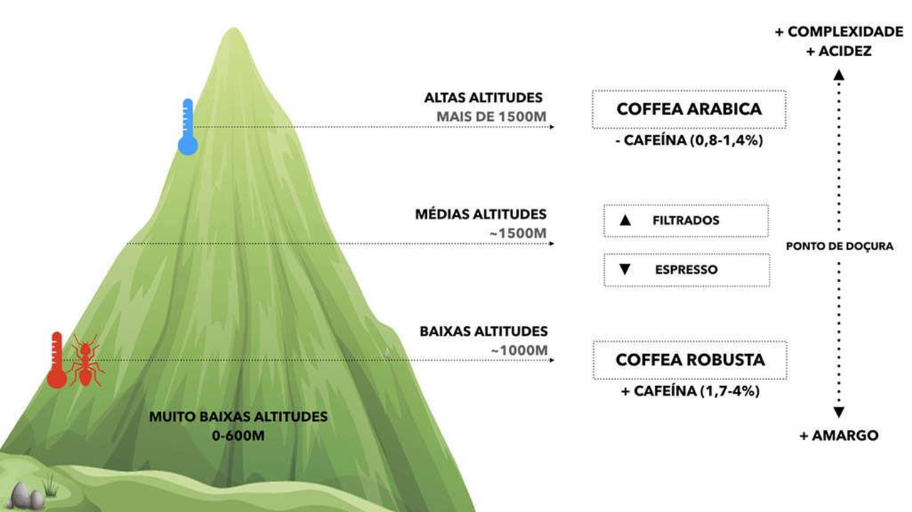

O que é Café de Especialidade
Café Especial é um café seleto, que passou por uma série de filtros de qualidade antes de ser embalado e vendido.
Na sua grande maioria, possui notas de complexidade de sabor acima de 85 pontos nos padrões internacionais, e seus aromas costumam ser florais e frutados.
É um café fresco (recente), com acidez e doçura naturais, plantados e colhidos à mão, processados em micro-lotes com grande cautela, e por isso apresentam um leque gigantesco de características sensoriais de aroma e sabor.
Para sabermos se um café é Especial, basta notar se possui na embalagem as informações de sua origem, a fazenda produtora, a altitude que foi plantado, tipo de processamento, número de peneira, grau de torra, notas sensoriais, e principalmente a data da torra.
Costuma ser vendido em até 2 meses após sua torra, para preservar seus aromas. A data costuma ser escrita à mão na embalagem.
As altas altitudes influenciam na construção dos sabores?
De fato, vimos que SIM! Mas não pela altitude em si, mas pelas baixas temperaturas.
Quanto maior a altitude, menor tenderá ser a temperatura, que tem ligação direta com o tempo de maturação da planta.

O frio atrasa o amadurecimento, fazendo com que a metabolização de seus açúcares leve mais tempo e produza um grão mais denso, com açúcares melhores construídos e acidez acentuada.
Já as altas temperaturas fazem a planta amadurecer mais rápido, não tendo tempo necessário para a metabolização dos açúcares, produzindo um café menos ácido, menos complexo, menos denso, como é o caso do Robusta.
O Robusta, por ser cultivado em ambiente mais seco, mais quente, precisa resistir mais às pestes. Por isso ele possui mais cafeína, que age como um inseticida natural.
Vimos que as altas altitudes (frio) costumam produzir cafés mais frutados, mais ácidos e doces, e as baixas altitudes grãos menos complexos e menos doces.
Por fim, cafés frutados são melhores extraídos em métodos filtrados, e cafés mais suaves como o Robusta contribuem mais para a extração de espressos.
A Colheita do Café
O café é uma fruta, e como qualquer fruta, ele passa pelo processo de amadurecimento normalmente. Se colhido antes da hora, ele terá gosto adstringente, azedo. Pense numa banana verde como exemplo, e numa banana amarela como sabor ideal.
O café verde ainda não amadureceu, e somente chegará lá (ao ponto de doçura) quando alcançar a cor vermelha ou amarela, dependendo da variedade.
Café que passou do ponto de maturação e ficou bordô ou preto, sabemos que apodreceu. E se processado normalmente, acarretará em sabores mais amargos.
Cafés colhidos à mão, por serem colhidos na maturação certa, possuem maior qualidade. Já os cafés de menor qualidade são aqueles colhidos por máquinas degrande porte, onde são colhidos os cafés maduros, mas também os verdes, os podres, pedaços de planta, que acabam todos dentro do mesmo lote.
Os cafés de supermercados são "extra-fortes" pois foram torrados ao máximo justamente para mascarar quaisquer defeitos de sabor.
A torra
Nos primeiros 2 e 3 minutos o café perde temperatura e umidade até se igualar à temperatura da máquina de torra.
No décimo minuto, aproximadamente, acontece o 1º crack (pensemos como um estalo de pipoca), onde o grão se racha por causa da pressão interna do grão, liberando uma porção de gases. Começa aqui uma fase avançada de desenvolvimento.
No décimo sexto minuto, aproximadamente, acontece o 2º crack, que pode ser considerada uma fase máxima de desenvolvimento de um perfil de torra. Dali em diante, acontecerá a carbonização e queima avançada, chamada fase de Pirólise. Aqui os grãos ficam pretos e os óleos essenciais do café veem mais à superfície, dando aparência brilhosa.
Quanto mais clara a torra (subdesenvolvido), maior a preservação da acidez, menor a decomposição da caracterização dos açúcares. Quanto mais avançada a torra (superdesenvolvido), menor a acidez e doçura do grão, mais amargo e poroso ele fica, perdendo cada vez mais umidade.
Consideramos, então, uma boa referência de ponto de doçura, a fase de desenvolvimento entre o 1º e o 2º crack (desenvolvido).
Da extração
Num tempo aproximado, temos entre 2 e 4 minutos como sendo ideal para uma extração comum, onde podemos alcançar o ponto de doçura.
Abaixo de 2 minutos, ou abaixo de +/- 86ºC, teremos uma combinação de sabores menos desenvolvida, puxando para o azedo.
Acima de 4 minutos, ou acima de +/- 96ºC, teremos uma combinação de sabores mais desenvolvida, puxando para o amargo.
Vimos como é uma célula de café no microscópio, suas paredes celulares e a presença dos óleos essenciais dentro de suas cavidades. Falamos sobre a importância de dominarmos as variáveis com maestria, para a melhor extração possível e o alcance do ponto de doçura correto de um café.